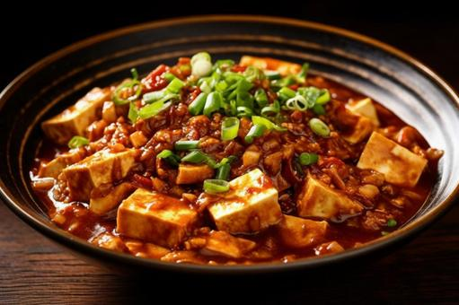

Mapo Tofu

Description
Mapo Tofu is a traditional dish from the Szechuan region in China. Its main ingredients are a fermented chili and bean paste, from which it derives its characteristic red color,
as well as Tofu chunks.
It tastes savoury, spicy and should be lightly numbing from the added szechuan pepper. While this specific preparation might not be fully traditional
it is how I cook and enjoy it every week.
Ingredients
serves 2 people
- 1 tsp black szechuan pepper corn (whole)
- 2 green onion (chopped, separate some of the greens for serving)
- roughly 150g of mixed ground meat (pork and beef)
- 1 tsp of grated ginger
- 1 tsp of soy sauce
- 3 tbsp of Doubanjiang
- 1 cup of stock or water
- 1 tsp of chili oil (or chili crisp)
- 1 tsp of sugar
- 1 block (~400g) of firm/extra-firm silken tofu (cut into even cubes of your preferred size)
- 3 tbsp of cooking oil (vegetable or peanut)
- 2 tsp of corn starch (slurried with cold water)
Steps
- In a dry wok, slowly bring the pepper corns up to heat. They should start lightly smoking and releasing their aroma
but not smell burnt. Remove them and grind them in a spice mill or mortar and pestle.
- Add your soy sauce and ginger to your ground meat and combine.
- Turn the heat to high and add your cooking oil to the wok followed by your ground meat mixture.
- When your meat has browned completely add your Doubanjiang to the wok and let it stir fry for about 2 minutes.
The cooking oil should take on a deep red hue.
- Turn down the heat a bit then add your spring onions to the wok and stir fry for another 2 minutes.
- Turn down the heat to medium-low then add your chili oil, the ground szechuan pepper corns, sugar and your stock.
- Slowly stir while it comes back up to heat and dissolve anything that sticks to the bottom of your wok
- Carefully add your tofu cubes to the broth and avoid stirring as to keep the integrity of the tofu.
- Let the mixture simmer for about 10 minutes. If it boils too strong turn down the heat, since you don't want to cook off too much of the broth.
- Slowly add in the corn starch slurry bit by bit and gently stir to avoid clumps.
- Serve with a little bit of the spring onion greens finely chopped on top and a portion of plain white rice on the side.
- Enjoy!
This recipe was based on this blog entry.